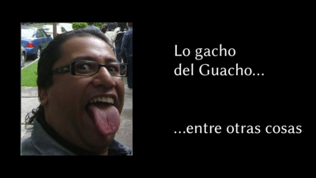

El día 17 de enero se realizó una transmisión en vivo en mi canal que vale la pena destacar. El buen Ex-Persona consiguió el testimonio de un ex-kaboom en el cual nos habla de diferentes temas.
Entre otras cosas, nos baja del (nulo) pedestal que teníamos a Horacio Sandoval. Muchos hemos comentado que sí tenía cierta posibilidad de redención, pero con este testimonio, creo que no.
Conozcan el trato que Óscar González Loyo le da a los dibujantes y personas que llegan a trabajar a Ka-Boom. ¿Les paga?, ¿son buenas las condiciones de trabajo?
Por lo pronto, recomiendo escuchar este podcast con detenimiento. En unos días vamos a colocar un enlace a una nota en la que hay respaldo por escrito de lo mencionado en este vídeo
Agradecimientos al buen Ex-Persona y a Onasis por toda esta labor de investigación
